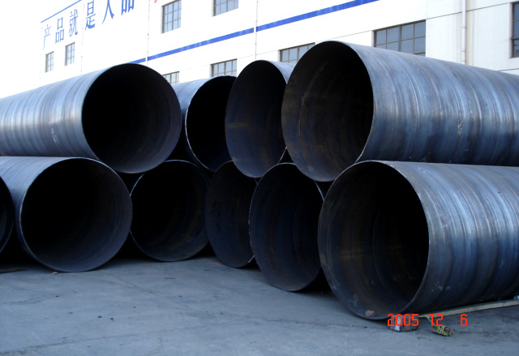

供应螺旋管价格先跌后涨整体受现货走势影响较
这些要素的存在，估计前期冷热板市局面临的情势较为严峻，价钱的分明下跌行情很难呈现。

国际钢市需求在传统消费淡季全体表现令人绝望，市场关于行将到来的消费旺季需求仍难抱希望，市场心态全体仍显失望，估计短期钢材期货走势仍将偏弱运转。上述机构数据显示，大邱庄矩管消费厂家库存总量为31.75万吨，较前一周增加0.75万吨;线材8.9万吨，较前一周增加0.95万吨;盘螺5.4万吨，较前一周增加0.7万吨。综合来看，本期沪市修建钢材库存总规模为46.05万吨，较前一周增加2.4万吨。
纵观全国市场，上周全国35个次要市场螺纹钢库存量为627.5万吨，增加9.95万吨，降幅为1.56%;线材库存量为135.85万吨，增加3.65万吨，供应螺旋管，降幅为2.62%。从全国线材、供应螺旋管。螺纹钢、热轧板卷、冷轧板卷、中厚板五大种类库存总量来看，全国综合库存总量为1312.75万吨，增加17.35万吨，降幅为1.3%。
地址：河北沧州螺旋钢管生产基地
手机：186-3170-5801 == QQ791117